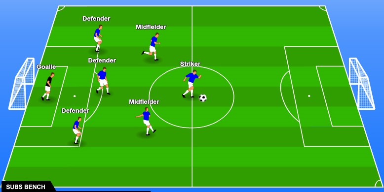
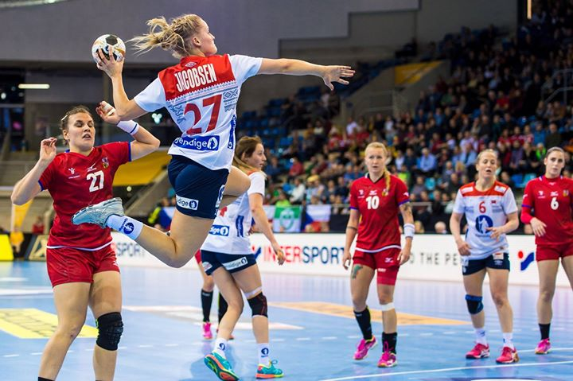
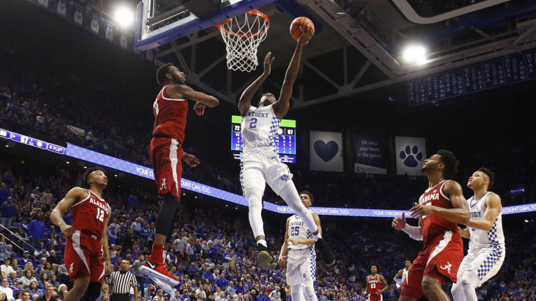

På denne nettsiden kan du lese om de 3 ulike sportene fotball, håndball og Basket.
fotball er en populær sport, og spilles over alt i verden. Under ser du posisjonene til 7'er fotballen (11-12 år)
klikk på linen under for mer info.
Norges fotballforbundHåndball er en lagidrett. Håndball blir spilt på en bane med på størrelsen 40 X 20 meter. Man får poeng ved at ballen havner i motstanderens mål. Den som har flest mål etter to omganger, vinner. Foran målet er det et felt formet som en halvsirkel med en radius på seks meter. Dette kalles målfeltet. Det er også en stiplet halvsirkel ni meter fra målet. Bare den forsvarende målvakta har lov til å være inne i målfeltet, selv om en hvilken som helst spiller kan prøve å ta ballen i lufta innenfor målfeltet. Skulle en forsvarende spiller prøve å stoppe en angriper ved å være innafor målfeltet, kan det bli 7m-kast (straffekast) til det angripende laget. Man får ikke lov til å sparke ballen, man kan kun bruke hendene
Spilleren som har ballen, - kan gå tre skritt før vedkommende må kaste den fra seg, - eller stusse den (sende ballen ned i gulvet, - hvoretter den kommer opp igjen, - og spilleren griper/fanger den igjen).
Disse tre skrittene gjelder også for målvakta hvis han er utenfor mål feltet, innenfor målfeltet kan målvaktene ta så mange skritt de vil.
Hvert lag inntil 14 spillere, men kun syv spillere, seks utespillere og en målvakt, kan være samtidig på banen.
les om Norges håndballforbund
Basketball, basket eller kurvball er en lagsport der to lag, bestående av fem spillere, prøver å score poeng mot hverandre ved å kaste en ball gjennom en ring. Dette må skje i tråd med reglene som er forhåndsbestemt før spillet starter. På internasjonal basis er basketball en av de mest populære sportene i verden.
Basketball foregår hovedsakelig på en innendørs basketballbane som en konkurransesport. Sporten regnes som en sommersport, og er en del av Sommer-OL til tross for at sesongen vanligvis foregår om vinteren i de fleste land. Basketball er også en populær utendørssport om sommeren. Da særlig i byområder.
les om norger basketballforbund her!